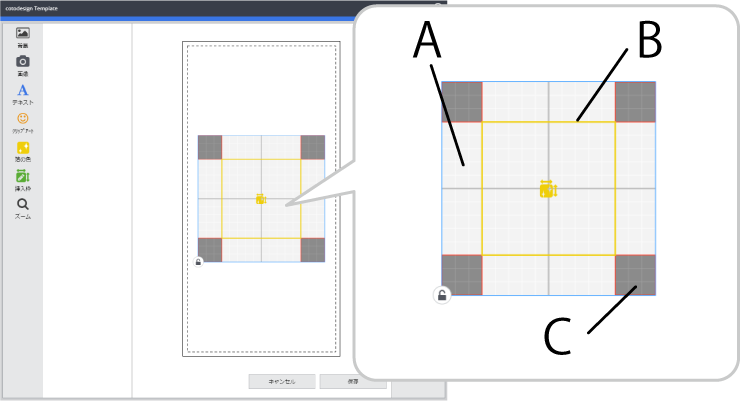

When you create a template dedicated for use with foil printing, one printing area (80 mm × 80 mm; 3.2 in. × 3.2 in.) and one edit area (50 mm × 50 mm; 2.0 in. × 2.0 in.) are created in the center of the template.
 A: Foil printing area B: Foil area C: Foil printing prohibited area (Nothing is printed in this area.)
The foil printing area indicates the printing range within the template. If you drag this area to move it, the printing position relative to the object to be printed on changes.
: Turn this on when you do not want to change the object's position or size.
Lay out images, characters, and edit areas within the printing area. If any items are outside of this area, an error will occur and you will not be able to save the template. Sometimes, it is best to limit the object layout positions depending on the model you are using. One such example is when it is possible for the printing results to be indistinct even though the items are all inside the printing area. For details, refer to the documentation for the model you are using.